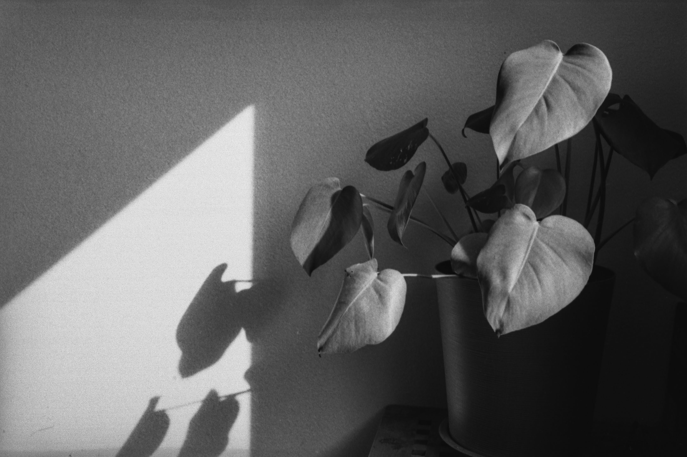
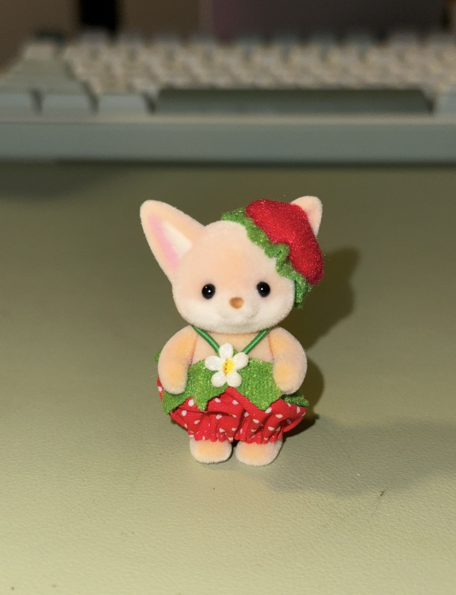

Entry #4

The image that my partner gave me is of a potted plant taken by a black and white film camera. The most interesting aspect of this image is the light and shadows created by the plant. It is obvious that the main subject is the plant, but the exact location of where this was taken is a mysterious aspect. I wonder what the significance of this plant is and why she chose to take a picture of it. A few suggestions that I have to create a better narrative for this image is to include a short story or text that explains what goes through her mind when it comes to this specific picture. She could also elaborate on other specific details surrounding the main subject.

To me, this image is interesting because it is of a figurine that is a part of my trinket collection. It is related to my topic because it represents how much of a sentimental person I am and shows that I love to keep little things that bring me joy. This image shows one of the very many different little things that I love to collect and keep in my room. A way I would update the image to make it more compelling is to cut the figurine out to use for my project. It brings more focus on the subject and it can help make my project look more fun and engaging. I imagine it being placed on a bookshelf of some sort or a little character that users can interact with.